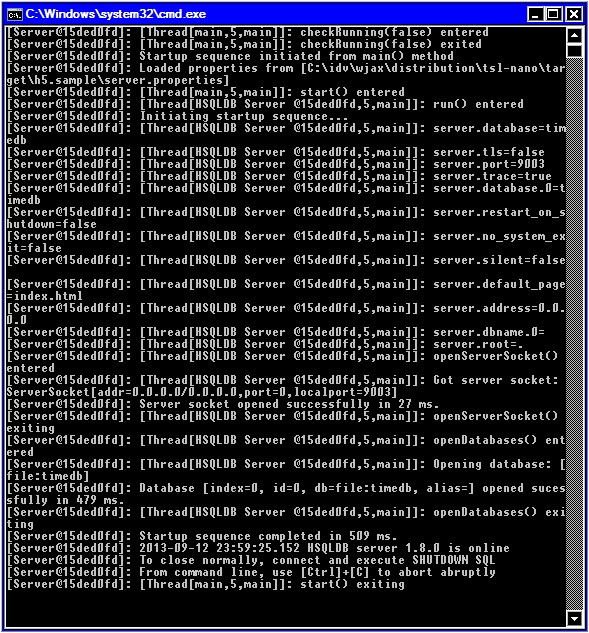
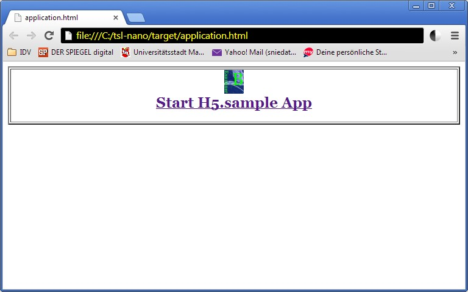
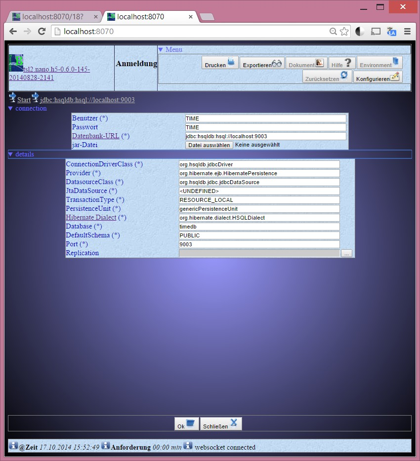
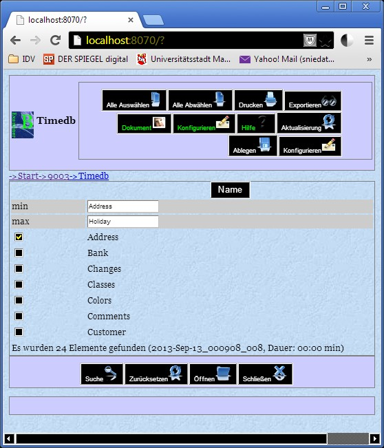
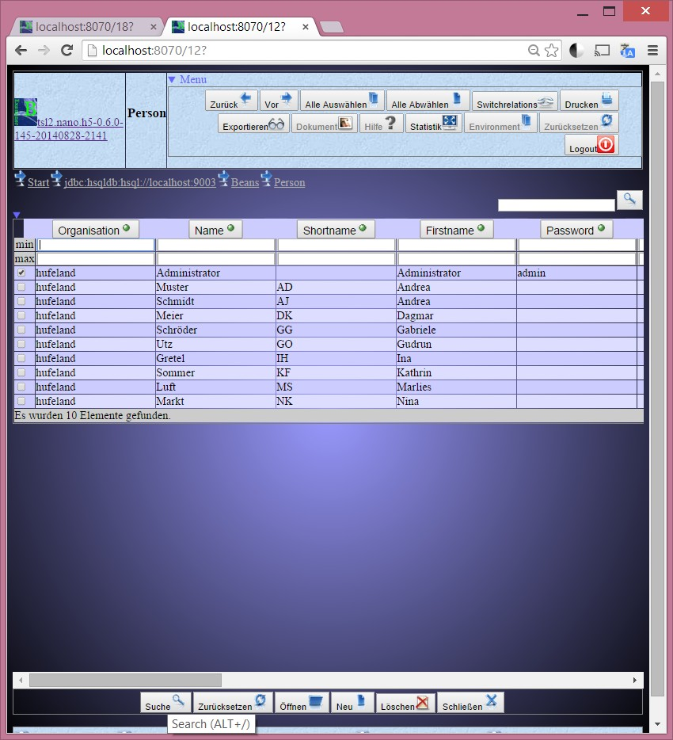

FullRelation Nano.H5
Autor: Thomas Schneider 2012-2014
NanoH5 (or FullRelation) is an UI independent gui implementation framework providing a model driven design (MDA). It is bound to the app framework tsl2.nano.commons and the jpa-service framework tsl2.nano.serviceaccess. It is possible to build a complete html5 application through a given class- or database-model.
Goals:
Using the NanoHTTPD Server as base, this client application creates html surfaces, sending them through the integrated server to an html browser. Entry point is the file application.html defining the browser request http://localhost:8067.
It is not a real web-application platform but a simple way to use html5 as graphical user interface – in a standard client application.
The base framework is tsl2.nano.common.
The data access is done by:
It is possible to use an ejb container in an application server, but the default is set to use jpa directly on the client (using tsl2nano.directaccess).
Why?
The base frameworks are grown through input of two industrial projects. the first project had to build a software fully configurable through a database. The second was a financial project.
project-environments:
What is it for?
this software should provide a fast way to create a standard application through a database model. through a complete set of configuration possibilities, a user may fit this application for his requirements. respecting a small set of rules, a software-developer is able to extend that application to do more specifics.
What this framework is not intended to be
Usable modes
The architecture is defined by the application framework tsl2.nano.common. The data and service layer is defined by tsl2.nano.serviceaccess.
Nano.h5 provides mechanisms to create a full configurable application from a given database definition file (ddl).
Creating an UML-Diagram with perhaps ArgoUML, or creating an ER-Diagram with f.e. architect you may generate a ddl script. Nano.H5 provides an ant-script (mda.xml) to generate a hsqldb-database and generating entity beans through hibernate-tools for the given jdbc-connection.
The tsl2.nano.h5 framework can be started through it’s jar tsl2.nano.h5-xxxxx.jar. A start script run.bat is available to do this in windows. Starting it, a given directory is used as a kind of workspace where you put all configuration and jar files into to be used. This jars may be ant, an o/r-mapper like hibernate with all it’s dependencies. The configuration files are the environment.xml and all xml files describing the presentation of each entity bean. Icons for all buttons and backgrounds are in the icon folder. The main jar file can contain all dependent jar files (as described in the manifest file) or outside in the same directory as the main jar.
A possible start configuratin would be:
Normally, you will start with an example: download the file h5.sample-hibernate-fulllibs-0.0.3.zip to have an example using lots of features of this project – you have a simple test database and are able to generate your bean jar, see a trivial application-extension, workflow, autorization and rule.
Feel free to test, whether a database-connection of a project you know is working with nano.h5....
A sample environment is h5.sample, containing all icons, jars and configurations for a project. It may be used for other nano.h5 projects. It uses:
Before you start nano.h5, you should start the sample hsqldb database:
h5.sample/runServer.bat

To start nano.h5 you have to call it with following syntax:
java -jar de.nano.h5.Loader [environment-path (default: config] [http-server-port (default: 8067)]
this call is implemented inside the start.bat script. Use that, if you are on windows.
If you start it on windows, a browser will be opened to show the initial screen:

Now you can login to the sample database. It is fully configurable, which o/r mapper and database should be used. After pressing Ok, a persistence.xml will be generated to be found by the javax.persistence implementation.

All entities of the jar-file, containing the entities, will be listed. You can filter the list and select one or more to edit them.

Then you will get a search page with a search filter and an empty list. Pushing the search-button will create the result list.

If you click a column header (here f.e. comments), the list will be sorted by this column – clicking on that column a second time, the sorting will be done in the other direction. The possible actions will be described in the next chapter.
The file h5.sample/environment.xml defines the application behaviour. For further informations read chapter The Environment.
It is possible to change the presentation of each bean. Inside the directory h5.sample/beandef all beans have configuration files to change their presentation and behaviour. If the beandef directory is empty, you can create the bean definitions by clicking on button ‚exit’ on the top left – this will save the current state and exits the application.
It is possible to create an own java project to define own application and bean behaviour. This is described in chapter Creating an own project.
Loading a Nano.h5 application will create and use an environment directory as workspace for it. Resources like icons, configuration xml-file and libraries will be put there – being on top of classpath.
A full list of configuration attributes can be found here
On top of each html page you will see on the left side an application icon (clicking on it, it tries to load the help file nanoh5.html). On top right, all page-specific buttons are shown. The following list tries to describe them. They depend on the current type of bean. A bean list will have other buttons than a beans detail page.
Hibernate 4 for example would have the following dependencies:
The Nano.H5 application can be started in different modes.
Permissions are set after connecting to the datasource through the persistence-unit. The permissions define activation of buttons and visiblity of fields. if all fields are invisible, no data and actions are available!
The application class NanoH5 has a method createAuthorization() that defines a subject with a user-principal and it’s roles, defined by permissions. If a file -permissions.xml is found, it will be used to fill the subject – if not, an admin-role with a wildcard-permission will permit anything!
Permissions contain a name – perhaps ended by a wildcard – and comma separated actions (a wildcard is possible, too. The permissions work on actions and data. The BeanContainer provides to ask for permissions: call BeanContainer.instance().hasPermission(name, actions) to check access to a call or to any data. The _Enviroment provides access to the implementation of _IAuthorization. Call _Environment.get(IAuthorization.class).hasAccess(name, actions) to check for permissions.
The framework does all checks for you. But if you need extended access to authority informations, read the following details.
Permissions on actions
To check whether a user can access a button (action) you call the hasAccess of IAuthorization or hasPermission of BeanContainer with the id of the action. The second method parameter may be a wildcard (*) or executable.
Permissions on data
To check whether an entity should be accessed by the current user, you call the hasAccess of IAuthorization or hasPermission of BeanContainer with the class-name + toString() representation of the current object. The second method parameter tells whether to read or write the object.
A navigator will guide the user through his application session. Before/after each page, the navigator will evaluate the next bean to present. This may be list of entities or simply the details of an entity.
The application can work on a simple navigation stack – a simple implementation is provided by the EntityBrowser. If a configuration file workflow.xml is found inside your environment-path, this workflow will be used, to navigate the user through his application session.
The EntityBrowser works on a Navigation-Stack, putting all available entity-types to the first bean-collector to be able to browse through all beans and data.
If a configured workflow is available, this workflow will be used as navigator.
A workflow holds one or more activities defined by an enabling condition and an execution expression. After finishing a page, all activities will be checked for their entry/enabling condition. Only one activity should have a positive condition. This activity will be executed. The execution will be calling an EJB-QL given by the expression and returning the result of that query as next navigation bean.
Example:
<?xml version=„1.0” encoding=„UTF-8”?>
All parameters are stored and given by the workflow. The following parameters will be stored automatically:
Use that parameters for your activity condition.
TODO: use bean-path to inspect condition expressions like ‚times.type = F’.
NOT FINISHED YET
It is possible to replicate the data loaded from remote database. The replication will be done through a second persistence-unit ‚replication’. For each user an own local replication database will be created.
The replication is done in it’s own thread to avoid conflictions with the application. The O/R mapper will create all tables through bean informations. A special bean holds the information (time, id, change-type) about the changes done by the user. All data, loaded and edited by the current user will be replicated to a local database.
The replication connection is configurable like the persistence-unit is. But at the moment, only the combination hsqldb and hibernate are tested – and it’s only usable without application-server!
At the moment the replication hsqldb database has to started manually.
- database: replication
- port: 9898
If you don’t want to have a standalone appliation, you are able to use an application server like jboss. To do this you must have:
Example jndi for jboss eap 6.1:
java.naming.factory.initial=org.jboss.naming.remote.client.InitialContextFactory
java.naming.factory.url.pkgs=org.jboss.ejb.client.naming
java.naming.provider.url=remote://localhost:4447
java.naming.security.principal=
java.naming.security.credentials=<perhaps the application name>
jboss.naming.client.ejb.context=true
Example authentication service method:
UserService.authenticate(String user, String password) {
...
//fill the server side ServiceFactory
if (!ServiceFactory.isInitialized()) {
ServiceFactory.createInstance(this.getClass().getClassLoader());
//registriere shared und error messages
ResourceBundle bundle = ResourceBundle.getBundle(„org.mycompany.myproject.shared_messages”,
Locale.getDefault(),
this.getClass().getClassLoader());
Messages.registerBundle(bundle, false);
bundle = ResourceBundle.getBundle(„org.mycompany.myproduct.error_messages”,
Locale.getDefault(),
this.getClass().getClassLoader());
Messages.registerBundle(bundle, false);
} /* * a user session will be created on server side. */ final CollectionuserRoles = new LinkedList (); final Collection mandatorFeatures = getMandatorFeatures(); ServiceFactory.instance().createSession(null, getMandant(), null, userRoles, mandatorFeatures, null); ... }
It is possible to generate your entity beans through a tool like hibernate-tools. for an example have a look at the sample-project nano.h5.sample.
If hibernate-tools creates your beans, it may create additional beans to use composed primary keys. To use them with nano.h5 you should extend these beans, to fill the id-bean from dependent entity fields. So, enhance the setter methods of this unique fields to fill the id-beans corresponding field, too.
class MyBean {
@Id MyBeanId id;
@Column MyType myUniqueField;
}class MyBeanId {
String field1;
String myUniqueFieldId;
}
If you change sources of this plugin, you should start ant script eclipse-tsl2.nano.h5.xml with target tsl2nano.eclipse.h5.export and after that the ‚deploy’ target of your main project.
Normally, you don’t have to create html-pages by yourself, but if you are interested in html5, have a look at the following tutorials/references:
To analyse the html-page in your browser, for example in your Chrome-Browser, you can analyse components by mouse-right-click on analyse element to debug and change the current bean presentation.
Nano.H5 is based on the framework tsl2.common and it’s bean package. The bean package provides a generic and comfortable way to describe your user interface. If the standards of Nano.H5 doesn’t fulfil your needs, you can develop own beans on top of Nano.H5 - without creating special gui-elements or interaction, this will be done by the framework – generating html-pages through the BeanPresentation implementation. Of course, this implementation is extendable, too. Have a look at chapter Dependencies to know, which jar-files you should copy to the environment directory (f.e. h5.sample).
If you download and unpack test.h5.sample, you yield an eclipse project referencing the tsl2.nano jar-files.
File Structure:
Auflistung der Ordnerpfade
Volumeseriennummer : 0059E65C 9A6F:E968
C:.
| .classpath
| .project
| application.html
| debug.log
| environment.xml
| h5.sample.log
| run.bat
| tree.txt
| tsl2.nano.common.1.0.0.jar
| tsl2.nano.h5.0.0.1.jar
| tsl2.nano.h5.default-resources.jar
|
+---h5.sample
| | ant-launcher.jar
| | ant-nodeps.jar
| | ant.jar
| | antlr-2.7.6.jar
| | antscripts.properties
| | antscripts.xml
| | application.html
| | commons-collections-3.2.1.jar
| | commons-lang-2.4.jar
| | dom4j-1.6.1.jar
| | environment.xml
| | freemarker.jar
| | h5.sample.sql
| | hibernate-tools-3.4.0.CR2.jar
| | hibernate.reveng.xml
| | hibernate3.jar
| | hibtool.xml
| | hsqldb.jar
| | javassist-3.12.0.GA.jar
| | jdbc-connection.properties
| | jdbc-connection.properties.bak
| | mda.bat
| | mda.properties
| | mda.xml
| | mypersistence-bean.xml
| | mypersistence-bean.xml.bak
| | mypersistence.xml
| | mypersistence.xml.bak
| | ojdbc14_g.jar
| | runServer.bat
| | shell.xml
| | slf4j-api-1.6.1.jar
| | timedb.jar
| | timedb.lck
| | timedb.log
| | timedb.properties
| | timedb.script
| | trang.jar
| | tsl2.nano.h5.default-resources.jar
| +---beandef | |
| project.xml | |
| start.xml | |
| times.xml | |
| +---generated-bin | |
| \---my | |
| \---app | |
| Loader.class | |
| MyApp.class | |
| +---generated-src | |
| \---my | |
| \---app | |
| Loader.java | |
| MyApp.java | |
| \---META-INF | |
| persistence.xml | |
\---META-INF
MANIFEST.MF
The implementation Loader.java and MyApp.java provide an own entry for the application. The Loader only tells java to load MyApp. MyApp overwrites three methods. Only createBeanCollectors defines own beans and an own navigation stack.
Here is the implementation:
Loader
public class Loader extends AppLoader {
public static void main(String[] args) {
new Loader().start(„my.app.MyApp”, args);
}
}
MyApp
public class MyApp extends NanoH5 {
public MyApp() throws IOException {
}
public MyApp(int port, IPageBuilder<?, String> builder,
Stack<BeanDefinition<?>> navigation) throws IOException {
super(port, builder, navigation);
}@Override
@SuppressWarnings(„unchecked”) public static void main(String[] args) { startApplication(MyApp.class, MapUtil.asMap(0, „http.port”), args); } }
protected BeanDefinition<?> createBeanCollectors(@SuppressWarnings(„rawtypes”) ListbeanClasses) {
/*
* define own beans to present your entities another way
*/
Collectiontimes = Environment.get(IBeanContainer.class).getBeans(Times.class, UNDEFINED, UNDEFINED);
BeanCollector<Collection, Times> beanCollector =
new BeanCollector<Collection, Times>(times, BeanCollector.MODE_ALL);
AttributeDefinition space1 = beanCollector.getPresentationHelper().addSpaceValue();
beanCollector.setAttributeFilter(„creation”, „dbEnd”, „pause”, space1.getName(), „project”, „comment”);
//more fields on one line (one field has grid-width 3)
beanCollector.getPresentable().setLayout(MapUtil.asMap(L_GRIDWIDTH, 12));
//let the field ‚comment’ grow to full width
beanCollector.getAttribute(„comment”).getPresentation()
.setLayoutConstraints(MapUtil.asMap(ATTR_SPANCOL, 11, ATTR_BORDER, 1, ATTR_SIZE, 150));
BeanDefinition.define(beanCollector);
/*
* use a rule with sub-rule
*/
BigDecimal result =
(BigDecimal) Environment.get(RulePool.class).getRule(„test-import”)
.execute(MapUtil.asMap(„A”, true, „x1”, 1, „x2”, 2));
LOG.info(„my test-import rule result:” + result);
/*
* define your own navigation stack
*/
return beanCollector;
}
Generic features like authorization for actions and data, filtering of columns and field, loading bitmaps etc. may slow down the application performance. The following tips may increase the performance:
set the following environment.xml properties:
| Version | Date | Description |
| 0.0.1 | 06.07.2013 | First alpha Version |
| 0.0.2 | 21.09.2013 | beta Version (full basic feature implementation) |
| 0.0.3 | 01.01.2014 | beta Version (basic features + authorization + workflows + rules) |